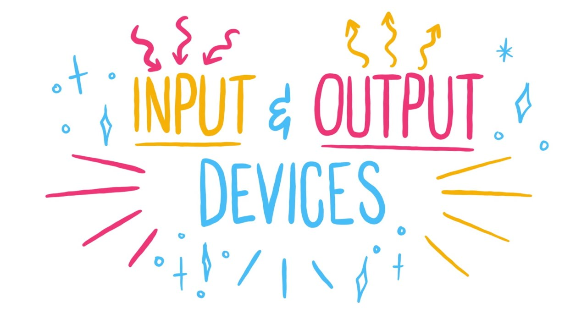

Invoer en uitvoer

Wat is invoer?
invoer of terwijl input is alles wat je in een computer stopt, zodat de computer er iets mee kan doen. Het zijn eigenlijk gegevens die je aan je computer geeft.
Voorbeelden hiervan:
Je typt iets op een toetsenboord.
Je klikt op een muis.
Je spreekt iets in een microfoon
Je scant een qr code of een streepjescode.